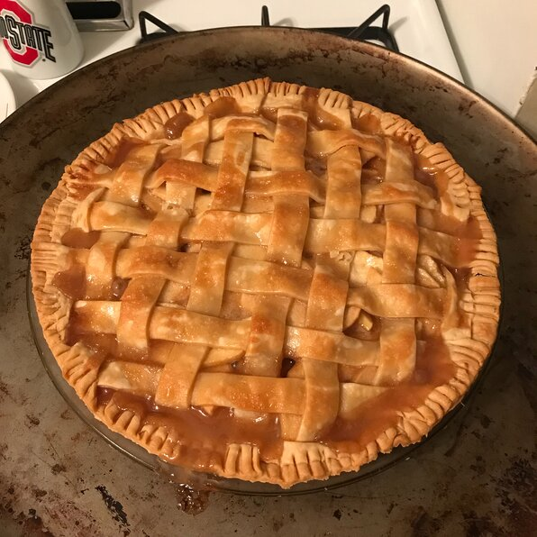

Apple Pie

Description
A yummy dessert that melts our hearts
Ingredients
- 1 recipe pastry for a 9 inch double crust pie
- 3 tablespoons all-purpose flour
- 8 Granny Smith apples - peeled, cored and sliced
Directions
- Preheat oven to 425 degrees F (220 degrees C). Melt the butter in a saucepan.
Stir in flour to form a paste. Add water,
white sugar and brown sugar, and bring to a boil. Reduce temperature and let simmer.
- Place the bottom crust in your pan. Fill with apples, mounded slightly.
Cover with a lattice work crust. Gently pour the sugar and butter liquid over the crust.
Pour slowly so that it does not run off.
- Bake 15 minutes in the preheated oven. Reduce the temperature to 350 degrees F (175 degrees C).
Continue baking for 35 to 45 minutes, until apples are soft.